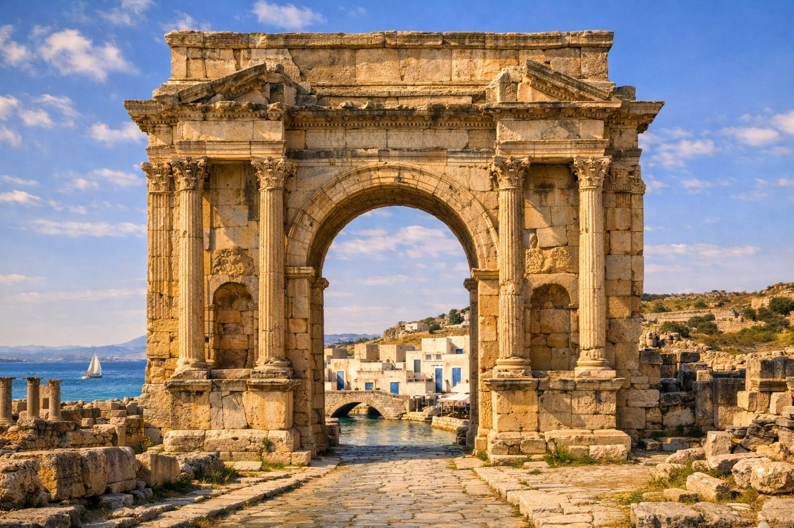

Welcome To:
A Land Where History
Meets the Mediterranean
Tunisia is a country of extraordinary contrasts — where ancient Roman ruins stand beside golden Saharan dunes, and whitewashed villages overlook the sparkling blue sea.
Explore bustling souks, taste vibrant cuisine, and discover Berber villages, salt flats, and Mediterranean coves.
3,000+
Years of History
1,300 km
Coastline
8
UNESCO Sites





Capital
Tunis
Currency
Tunisian Dinar (TND)
Population
12 Million
Language
Arabic
Time Zone
GMT +1
Climate
Mediterranean